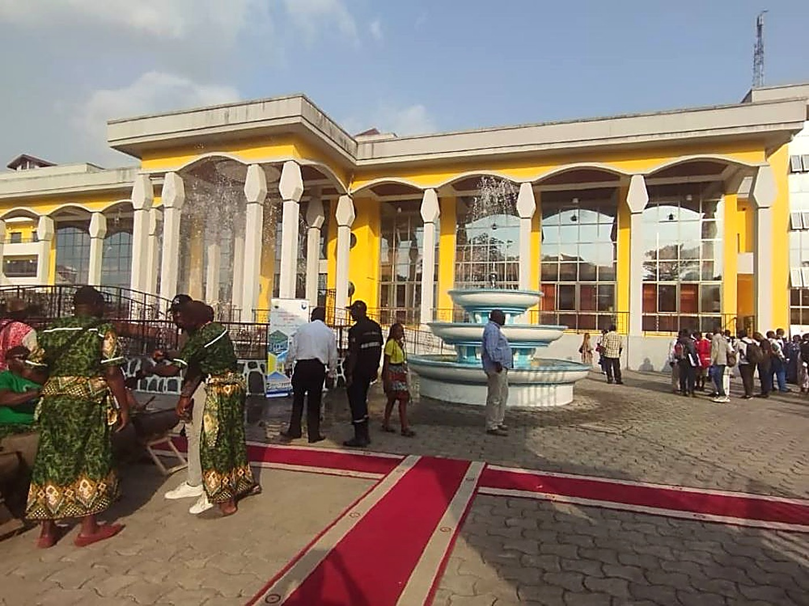
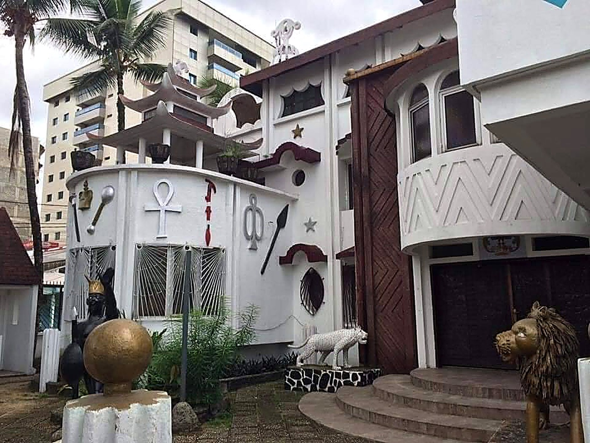

Origins of the Canton
According to the history of the Duala, descendants of Ewalé Mbédi, patriarch Doo Makongo was born between 1697 and 1702 and ruled over all Duala territories. Among his many children were two sons whose relationship was strained: the eldest, Njoh Priso'a Doo, and the younger, Bèlè ba Doo. Faced with this rift, Doo Makongo chose Bèlè's son to succeed him, renamed "Bebe Bell" — thus becoming the first King Bell of the modern era. He was followed by Loba'a Bebe, Ndumbe'a Lobe, and then Rudolf Duala Manga Bell, whose reign was marked by fierce opposition to the colonial German expropriation of the Bonanjo lands — a fight that cost him his life: he was hanged on 8 August 1914.
This tragic death left the throne vacant for several years. Alexandre Duala Manga Bell, Rudolf's son, returned from France to take up the reins, and on his death designated his nephew René Douala Manga Bell as successor — the 8th King Bell — who reigned for nearly forty years until his passing in 2012. His son, Jean-Yves Eboumbou Douala Manga Bell, succeeded him. Sharing the Douala 1st district with Akwa and Déido, Bell Canton is also home to Douala's administrative quarter, the autonomous port — Cameroon's gateway — and numerous colonial-era landmarks: the Royal Pagoda built in 1905 by August Manga Ndoumbe, the tree on Joss Plateau where Rudolf Bell was hanged, the Unknown Soldier monument, and the gravestones of several Kings Bell. It is also a hub of social integration, with its well-known "back yard", New Bell.
⚔️ Historic Resistance
The Superior Chief
The Ngondo in Pictures

